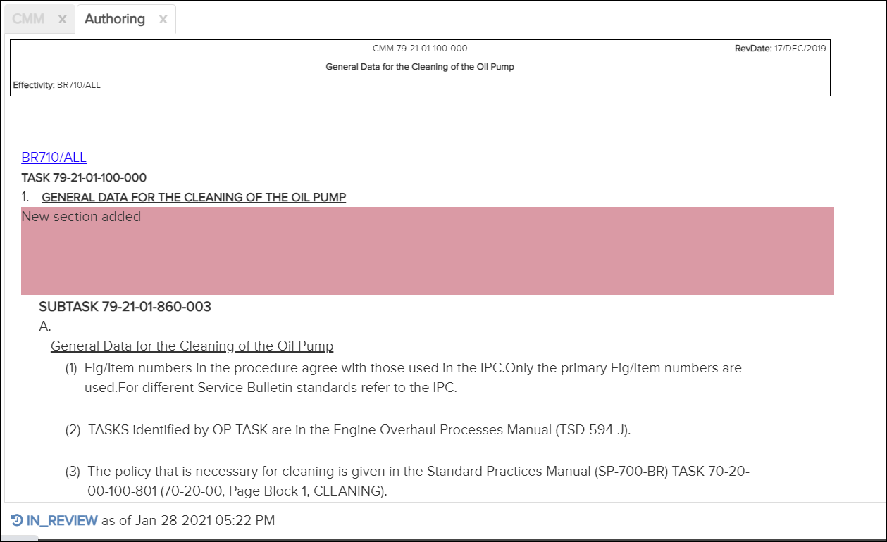

Not applicable for Pinpoint Standalone Light.
After making all content and figure authoring changes to the draft, you can send it for review.
Refer to Content Authoring and Figure Authoring for authoring details.
To send a draft for review, do these steps:
-
Click the button to send the draft for review.
The draft shows the status of "In Review" at the bottom left of the Content pane. The status of the draft can be one of these:
- In Progress - status when authoring the content.
If the reviewer rejects the draft when reviewing it, the status returns to In Progress.
- In Review - status when draft is submitted for review.
- Approved - status when draft is approved by the reviewer.

Authoring Tab - Draft Status
Click the status to view the history of the draft. In the screen shown above you would click "In Review" in the screen shown above. The Draft History log appears. For example:A user with permission for the Can review authored changes privilege can reject or accept the changes. Refer to Approve/Reject Changes.
Draft History Log
- In Progress - status when authoring the content.